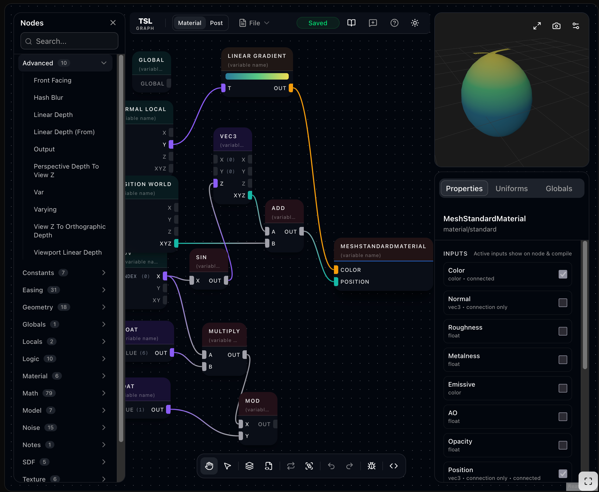

Page 18: Shading Languages
We need some language to program shaders in.
Short version for 2026: In class, we’ll focus on using GLSL to learn. But we’ll look at TSL (Three Shading Language) a little.
Understanding the differences in the types of shading languages is useful, so it warrants an explanation.
The Landscape of Shading Languages
Prior to 2024, there really wasn’t a choice: the WebGL API had a built-in language called GLSL. It was the shading language built into the browser. Therefore it was pretty much the standard.
After 2025, most web browsers also support a newer API called WebGPU. WebGPU has a different shading language called WGSL.
These languages are designed for writing shader programs; they map exactly to the way the hardware works. This makes them excellent for learning how shaders work and how to program them. And they are standard: they are supported directly by the web browser. They aren’t specific to some particular third-party thing (like three.js, or some commercial game engine).
However, there is another aspect of shader programming that these languages are bad at: interfacing with the “host system.” For example, we want to write our own shaders, but we would like them to work well with three.js’s cool features, like dynamic environment maps, physically-based lighting, and shadow maps.
Therefore, systems like three.js or game engines (such as Unity or Unreal) tend not to use standard shading languages. They provide their own language. This has the advantage that the engine can translate the programs into whatever language works best on the target hardware. While GLSL was standard for the web, game consoles and different desktop operating systems often had different languages that worked best.
These system-specific languages are usually quite different from the “standard” languages: they focus on helping programmers connect their programs to the graphics pieces provided by the system. This also allows for special programming tools that allow programmers and artists to make shaders by connecting pieces together. We’ll come back to talk about these “composition” tools/systems later.
{kind=link}

Composition languages are often connected to graph-based interfaces. TSL has this online graph editor. TSL-Graph Editor
While composition languages (like TSL, the Three Shading Language) are convenient, they may not be as good for learning. And they tend to be specific to a system. Therefore, I think it’s best to learn using a “traditional” shading language first.
However, in the future, these languages are becoming less common and less-well-supported. And the other problems may not apply: in class, we use three.js. And while other systems (such as Unity or Unreal) are different, the basic ideas are the same.
Unfortunately, it wasn’t practical to switch completely to TSL in Spring 2026.
A Note on Three.js in Spring 2026
In early 2026, three.js is in the process of a transition. Its support for a WebGPU backend/renderer is becoming stable enough to be a preferred pathway (rather than the WebGL backend). TSL is now the preferred way to write shaders.
Unfortunately, both of these developments are too new to be useful in class. When we had to choose, it wasn’t clear that WebGPU was ready. And TSL is so new that the documentation is not yet fully developed, and there are few tutorials.
Conversely, it is clear that WebGL (and GLSL) support is being abandoned. In the future, we’ll have to switch.
Using a mix of shading languages in class is complicated: three.js only supports GLSL using the WebGL renderer; if you want to use TSL, you need to use the WebGPU renderer.
The other option, using WGSL (the WebGPU shading language) isn’t really an option: three.js does not provide good access to it. It translates TSL to WebGPU, but it doesn’t provide complete access to WebGPU.
A Warning About Colors
When we move from the WebGL to the WebGPU renderer, three.js switches to a different color model (color space mapping). This makes it easier to do physically correct lighting. However, it means that all of our old colors need to be adjusted. Over the next few pages, you will notice that the WebGL and WebGPU versions of the same demos have slightly different colors.
What will we do?
In class, we will use GLSL to learn the basics of shader programming. We have legacy material, and we can use the three.js WebGL renderer (note: this is not the default for the class framework!).
However, because many of the tools and resources are deprecated, we won’t do as much GLSL programming as we have in the past.
After learning the basics, we’ll look at TSL briefly. It is good enough for experimenting with. And by the time class is over, there will be a new version of three.js and I am pretty sure that TSL will just keep getting better. Like most things in three.js, it is well-thought-out and well-built.
A Look At Three Languages
Let’s compare the three shading languages:
- GLSL has a C-like syntax and very explicitly maps to the ideas of shader programming and the hardware. You declare variables to be attributes or varying, etc. The language has many features to make it suited for graphics programming, such as built-in vector math.
- WGSL is similar to GLSL, except that it uses a Rust-like syntax. I am not a Rust programmer, so it seems pretty alien to me.
- TSL isn’t actually its own language: we write shader programs by connecting JavaScript objects together. We write JavaScript programs that build data structures that represent the programs. At the appropriate time, the three.js runtime converts these to some other shading language.
Here is the most boring example that I can make to compare. (Actually, Codex wrote these for me)
In three.js, only GLSL has “standard” vertex shaders. When we use WGSL or TSL, the two shaders get mixed into how the material is handled. This is part of the reason it is useful to learn using GLSL.
We’ll explain the GLSL programs on future pages, but I want to show the three different shaders for comparison.
Here is the GLSL fragment shader:
|
|
It sets the output variable (gl_FramColor) to yellow. Note the C-like syntax, and how this small shader program communicates to other things by setting variables.
The WGSL program is quite similar, it just has a Rust-like syntax:
|
|
Here is the TSL Shader. It is just JavaScript code. We hook the constant value to the color “input”:
|
|
This code combines the interface to three.js’s material system with the plug-things-together composition paradigm.
Here is a more complex example. We’ll explain the dots (in GLSL) later…
Here are the GLSL and WGSL programs. For now, just notice how similar they are (other than the C vs. Rust style syntax).
GLSL:
|
|
WGSL:
|
|
The TSL shader is again in JavaScript, and works by “wiring together” objects. Again, we will explain how this works later: for now, just observe that it’s JavaScript and connects objects together. Some of the object creation is hidden (many of the method calls like mul, fract and sub create node objects).
|
|
Summary
We’ve seen some shading languages, and the rationale for what we are going to use in class. Now we can actually learn how to program in them.
Next: Page 19 - GLSL and three.js